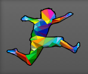
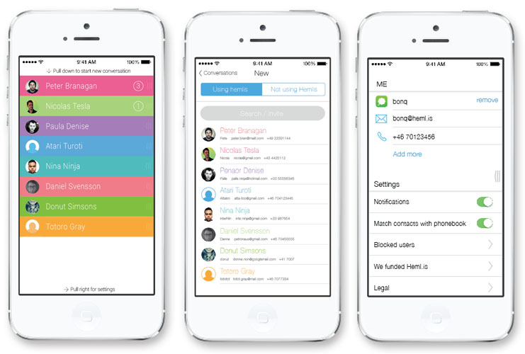

Upcoming Projects
DarkMail
To bring the world our unique end-to-end encrypted protocol and architecture that is the 'next-generation' of private and secure email. As founding partners of The Dark Mail Technical Alliance, both Silent Circle and Lavabit will work to bring other members into the alliance, assist them in implementing the new protocol and jointly work to proliferate the world's first end-to-end encrypted 'Email 3.0' throughout the world's email providers. Our goal is to open source the protocol and architecture and help others implement this new technology to address privacy concerns against surveillance and back door threats of any kind.
More Information
For more information visit darkmail.info
LEAP Encryption Access Project
LEAP is a non-profit dedicated to giving all internet users access to secure communication. Our focus is on adapting encryption technology to make it easy to use and widely available.
LEAP's multi-year plan to secure everyday communication breaks down into discrete services, to be rolled out one at a time. When we introduce a new service, integrated support will be added to both the user-facing Bitmask and the server-side LEAP Platform for Service Providers. All communication content will be client-side encrypted, and as much of the metadata as possible. Most importantly, all LEAP services will be based on our plan for federated secure identity and unmappable routing.

Roadmap
- Phase 1 - Encrypted Internet Proxy Our first service will be Encrypted Internet Proxy, providing circumvention, location anonymization, and traffic encryption that is hassle-free, automatically self-configuring, and has an enhanced level of security.
- Phase 2 - Email Our second service will be client-encrypted email. The LEAP approach to email is to support communication with the legacy email infrastructure while also adding optional layers to the protocol that bring email more in line with modern security practices. Encryption and decryption will take place transparently via local IMAP and SMTP proxies, allowing the user their choice of mail client.
- Phase 3 - Chat Our third service will be secure chat. We plan to build on top of XMPP, but modify the protocol to allow for higher security and greater usability (while being able to fall back to traditional XMPP when necessary).
- Phases 4, 5, 6 In the long term, we plan to develop and deploy client-encrypted file sync/backup, voice communication, and document collaboration.
More Information
For more information visit leap.se
Hemlis Messenger
Threema is a mobile messaging app that puts security first. With true end-to-end encryption, you can rest assured that only you and the intended recipient can read your messages. Unlike other popular messaging apps (including those claiming to use encryption), even we as the server operator have absolutely no way to read your messages.
Screenshots

Above: iPhone App
Download
Will be available for Android and iOS.
Price: Free
More Information
For more information visit the website